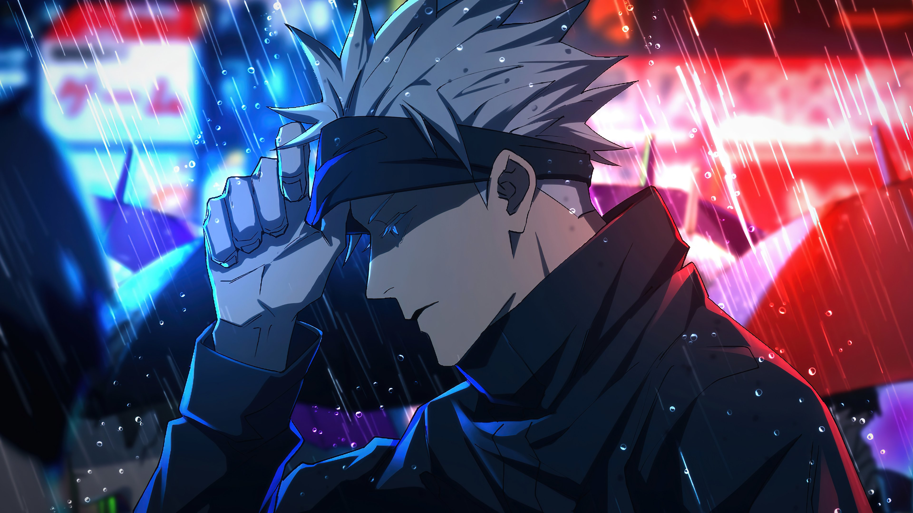

1. Crea un botón que cambie de color cuando esté en estado :hover.
2. Usa :target para mostrar un mensaje oculto al hacer clic en un enlace.
¿SEGUROOOO?
Borralooo
¡Has encontrado el mensaje oculto!
3. Da un estilo especial al primer hijo de un contenedor usando :first-child.
Este es el primer párrafo.
Este es el segundo párrafo.
Y este es el tercero.
4.Estiliza los campos de formulario no válidos usando :invalid.
5. Resalta solo los campos de tipo email con :type.
6. Diseña un formulario donde el campo activo (:focus) cambie de borde.
7. Estiliza únicamente los elementos únicos de su tipo con :only-of-type.
Primer párrafo
Segundo párrafo
8. Aplica estilo solo al primer párrafo de una sección con :first-of-type.
Este es el primer párrafo (será resaltado).
Este es el segundo párrafo.
Y este es el tercero.
9. Usa :root para definir una variable de color y aplícala.
EJEMPLO
Este texto usa un color definido como variable en :root.
10.Diseña una navegación con sus etiquetas semanticas que cambie su color al pasar
sobre cada link.
11.Añade un icono antes de cada título con ::before.
Inicio
Servicios
Sobre nosotros
Contacto
12. Añade una línea decorativa después de cada párrafo con ::after.
Este es el primer párrafo de ejemplo.
Este es el segundo párrafo con una línea decorativa debajo.
Y este es el tercero, que también la tendrá.
13.Crea un botón con un efecto de sombra usando ::after
14.Añade comillas antes y después de un bloque de cita.
"Errare humanum est."
15.Diseña un input que tenga un ícono dentro usando ::before.
16.Coloca una imagen de forma relative y mueve su posición sin alterar el flujo.

17.Crea una tarjeta que contenga un botón de eliminar con absolute.
Tarjeta de ejemplo
Esta es una tarjeta con un botón de eliminar posicionado con absolute.
18.Haz una barra de navegación fija en la parte superior (fixed).
19.Apila dos cajas usando z-index para controlar qué caja aparece arriba, cada caja
debe tener un color de fondo diferente.
Caja 1
Caja 2
20.Diseña una card que se centre usando position y transform.
Card Centrada
Esta card está centrada en la página usando position y transform.
21.Define una variable global para color primario y aplícala a varios elementos
Título principal
Subtítulo
Encabezado menor
Este es un párrafo de ejemplo con un enlace.
22.Crea un tema oscuro cambiando variables en :root
Card Oscura
23.Usa una variable con valor fallback si no existe otra definida.